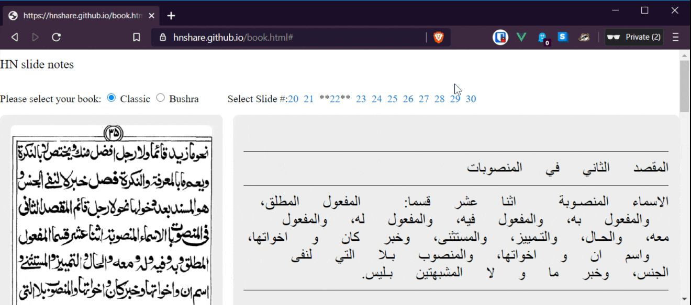

Rough Ideas / Concepts for Brainstorming:
========================
Teaching Sarf - Ideas:
Guess Who game idea:
Found 2 approaches that we can build on top of/modify:
Q: Identify whether verb is mujarrad, or if mazeed fiyh, which type?
Does it have extra letters?
N Mujarrad STOP I fa3ala ex: K-a-T-a-B-a ("to write")
Y Does it have a shaddah?
Y Does it have a taa?
Y tafa33ul STOP V tafa33ala ex: t-a-DH-KK-a-RR-a ("to receive admonition")
N taf3eel STOP II fa33ala ex: 3-a-LL-a-M-a ("to teach")
N Does it have alif in the middle?
Y Does it have a taa?
Y tafaa3ul STOP VI tafaa3ala ex: t-a-DH-aa-H-a-R-a ("to support one another")
N Mufaa3alah STOP III faa3ala ex: q-aa-T-a-L-a ("to fight")
N if it has:
noon infi3aal STOP VII infa3ala ex: i-n-Q-a-L-a-B-a ("to turn away")
taa ifta3aal STOP VIII ifta3ala ex: i-3-t-a-R-a-DH-a ("to excuse oneself")
seen istaf3aal STOP X istaf3ala ex: i-s-t-a-H-Z-a-A-a ("to make oneself mock at")
-none- if3aal STOP IV af3ala ex: a-H-L-a-K-a ("to destroy")
Concept reference: https://www.youtube.com/watch?v=FE6nNXJv268&feature=youtu.be&t=291
Ext. Reference: http://corpus.quran.com/documentation/verbforms.jsp
http://corpus.quran.com/bibliography.jsp
========================
Qur'aan: show Mushaf text without tashkeel until you mouse over or touch a word:

Hadith: same concept as above; also show parallel translation side by side so student can self test.

Hidayatun Nahw: Tashkil On/Off concept applied to HN book. Can do for other Arabic literature books maybe.
